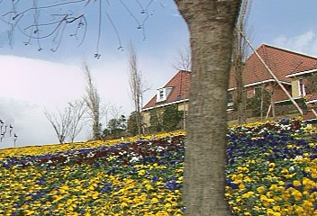

Подрисовывание изображений образцами (Exemplar-Based Image Inpainting) - удаление больших объектов с изображений.
Выбранные объекты будут заменяться визуально правдоподобным фоном, который имитирует вид соседних областей исходника. В отличие от других средств подрисовки (заполнения, удаления логотипов), данный фильтр не размывает "дыры" на изображении. Он пытается заменить дыры некими подобными текстурными элементами (заплатами, образцами, блоками) из области изображения кадра, беря в расчет специальные точки изображения (с оцененной достоверностью и приоритетом). Блочное подрисовывание начинается на границе дыры и распространяется к его внутренней области, по изофоте в качестве направления.
Алгоритм основан на статье: Object Removal by Exemplar-Based Inpainting. A. Criminisi, P. Perez, K. Toyama. In Proc. Conf. Comp. Vision Pattern Rec., Madison, WI, Jun 2003. http://research.microsoft.com/vision/cambridge/papers/Criminisi_cvpr03.pdf
ExInpaint (clip, clip "mask", int "color", int "dilate", int "xsize", int "ysize", int "radius", int "steps")
самый первый параметр - исходный клип. Если клип маски опущен и исходный клип имеет формат RGB32, тогда его альфа-канал используется как маска с порогом = 127 (все пикселы с соответствующей alpha= 128-255 будут подрисованы). В других случаях, маска берется из клипа mask и обрабатывается иначе.
mask : клип с маской. Должен быть того же формата и размера как исходный клип.
color : цвет маски в клипе mask (если используется). Пикселы с ТОЛЬКО с данным цветом будут рассматриваться как маска. (по умолчанию = $FFFFFF как чисто белый для RGB). Замечание: для YUV цветового пространства, величина color - в YUV (подобно color_yuv в фильтре ColorYUV).
dilate : (экспериментальный) признак расширения маски. 0 - не расширять, 1 - расширять по горизонтали, 2 - расширять по вертикали, 3 - расширять по обоим направлениям. По умолчанию=0.
xsize, ysize : горизонтальный и вертикальный размер заплаты (блока) поиска и подрисовки. Заплата должна быть несколько больше чем наибольший различимый текстурный элемент. (По умолчанию =8)
radius : радиус поиска подобного блока. Должен быть больше чем удвоенный размер заплаты и больше чем максимальный радиус дырки. Чем больше, тем медленнее. Установите в 0 для автоматического оценивания величины (по умолчанию)
steps : ограничивает число шагов порисовки для отладки (по умолчанию=100000, практически неограниченно).
Медленный, не оптимизирован, особенно для большого радиуса.
Это пространственный фильтр разработанный для статических изображений. Использует только текущий кадр. Таким образом, мы можем видеть временную нестабильность в данной версии.
Потенциально он может быть использован для удаления логотипов, реставрации фильмов (удаления пятеп и царапин), и заполнения пустых или поврежденных областей после захвата ВХС или компенсации движения.
Он может быть реализован по-другому, может быть как часть MVTools. Текущая версия - главным образом для тестирования.
Для удаления логотипов и подобных задач вы также можете попробовать фильтры подрисовки XLogo, AVSInpaint, Greycstoration.
Окантованный кайдр с синей маской на границах (конечно мы можем маскировать не только границы):
Подрисованный кажр, который был восстановлен из маскированного кадра (приятные текстуры цветов, дерева и дома):
Оригинальный кадр для сравнения (некоторые скрытые детали конечно отличаются):

Использованный скрипт для данного примера:
loadplugin("exinpaint.dll")
AVISource("G:\flower\sflowg.avi")
converttorgb
i=last
c=letterbox(16,16,16,16,color=$0000ff) # синяя маска mask
# (по некоторой причине синий есть $0000FE в JPG изображении)
exinpaint(c,c,color=$0000ff) # испльзуем исходный клип как маску
interleave(c,last,i)
http://forum.doom9.org/showthread.php?t=133773
Версия 0.1 (13.01.2008)
Версия 0.2 (26.01.2008)
Version 0.2.0 (16.09.2009, тот же бинарник)
Version 0.2.0.0 (15.09.2011, тот же бинарник)